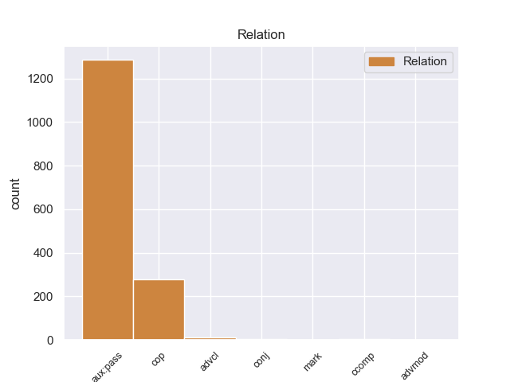
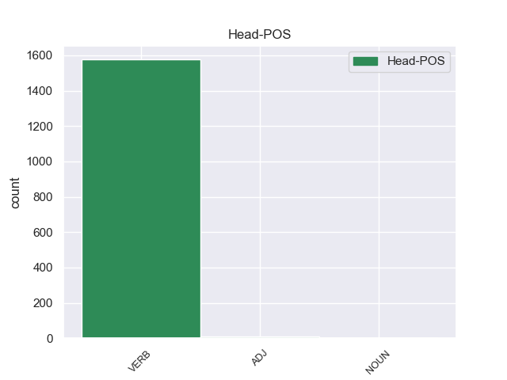
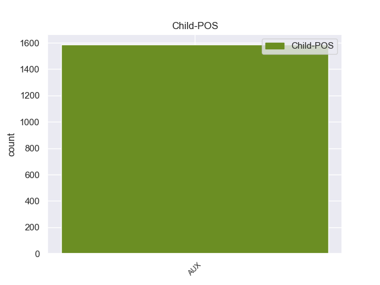

Distribution of features within this leaf



Agreement Rules sorted by frequency.
- When the dependent token is the passive auxiliary(aux:pass) of the head token, and the dependent token is AUX.
1 En _ _ _ _ 0 _ _ _
2 estos _ _ _ _ 0 _ _ _
3 trabajos _ _ _ _ 0 _ _ _
4 se _ _ _ _ 0 _ _ _
5 pusieron _ _ _ _ 0 _ _ _
6 a _ _ _ _ 0 _ _ _
7 el _ _ _ _ 0 _ _ _
8 descubierto _ _ _ _ 0 _ _ _
9 25 _ _ _ _ 0 _ _ _
10 vanos _ _ _ _ 0 _ _ _
11 correspondientes _ _ _ _ 0 _ _ _
12 a _ _ _ _ 0 _ _ _
13 ventanas _ _ _ _ 0 _ _ _
14 saeteras _ _ _ _ 0 _ _ _
15 que _ _ _ _ 0 _ _ _
16 habían _ _ _ _ 0 _ _ _
17 sido ser AUX _ Gender=Masc|Number=Sing|Tense=Past|VerbForm=Part 18 aux:pass _ _
18 tapiadas tapiada VERB _ Gender=Masc|Number=Sing|Tense=Past|VerbForm=Part 0 _ _ _
19 en _ _ _ _ 0 _ _ _
20 los _ _ _ _ 0 _ _ _
21 siglos _ _ _ _ 0 _ _ _
22 anteriores _ _ _ _ 0 _ _ _
23 . _ _ _ _ 0 _ _ _
1 El _ _ _ _ 0 _ _ _
2 entrenador _ _ _ _ 0 _ _ _
3 serbio _ _ _ _ 0 _ _ _
4 confía _ _ _ _ 0 _ _ _
5 en _ _ _ _ 0 _ _ _
6 el _ _ _ _ 0 _ _ _
7 jerezano _ _ _ _ 0 _ _ _
8 , _ _ _ _ 0 _ _ _
9 que _ _ _ _ 0 _ _ _
10 se _ _ _ _ 0 _ _ _
11 convierte convierter VERB _ Mood=Ind|Number=Sing|Person=3|Tense=Pres|VerbForm=Fin 0 _ _ _
12 en _ _ _ _ 0 _ _ _
13 parte _ _ _ _ 0 _ _ _
14 fundamental _ _ _ _ 0 _ _ _
15 de _ _ _ _ 0 _ _ _
16 el _ _ _ _ 0 _ _ _
17 equipo _ _ _ _ 0 _ _ _
18 que _ _ _ _ 0 _ _ _
19 consigue _ _ _ _ 0 _ _ _
20 " _ _ _ _ 0 _ _ _
21 El _ _ _ _ 0 _ _ _
22 Doblete _ _ _ _ 0 _ _ _
23 " _ _ _ _ 0 _ _ _
24 , _ _ _ _ 0 _ _ _
25 es es AUX _ Mood=Ind|Number=Sing|Person=3|Tense=Pres|VerbForm=Fin 11 cop _ _
26 decir _ _ _ _ 0 _ _ _
27 , _ _ _ _ 0 _ _ _
28 que _ _ _ _ 0 _ _ _
29 gana _ _ _ _ 0 _ _ _
30 la _ _ _ _ 0 _ _ _
31 Liga _ _ _ _ 0 _ _ _
32 y _ _ _ _ 0 _ _ _
33 la _ _ _ _ 0 _ _ _
34 Copa _ _ _ _ 0 _ _ _
35 de _ _ _ _ 0 _ _ _
36 el _ _ _ _ 0 _ _ _
37 Rey _ _ _ _ 0 _ _ _
38 de _ _ _ _ 0 _ _ _
39 Fútbol _ _ _ _ 0 _ _ _
40 en _ _ _ _ 0 _ _ _
41 esa _ _ _ _ 0 _ _ _
42 misma _ _ _ _ 0 _ _ _
43 campaña _ _ _ _ 0 _ _ _
44 . _ _ _ _ 0 _ _ _
1 Para _ _ _ _ 0 _ _ _
2 solucionar _ _ _ _ 0 _ _ _
3 esto _ _ _ _ 0 _ _ _
4 Heinrich _ _ _ _ 0 _ _ _
5 Himmler _ _ _ _ 0 _ _ _
6 dictó _ _ _ _ 0 _ _ _
7 un _ _ _ _ 0 _ _ _
8 decreto _ _ _ _ 0 _ _ _
9 que _ _ _ _ 0 _ _ _
10 hacía _ _ _ _ 0 _ _ _
11 que _ _ _ _ 0 _ _ _
12 los _ _ _ _ 0 _ _ _
13 Generales _ _ _ _ 0 _ _ _
14 de _ _ _ _ 0 _ _ _
15 las _ _ _ _ 0 _ _ _
16 SS _ _ _ _ 0 _ _ _
17 que _ _ _ _ 0 _ _ _
18 pertenecían _ _ _ _ 0 _ _ _
19 a _ _ _ _ 0 _ _ _
20 las _ _ _ _ 0 _ _ _
21 Waffen _ _ _ _ 0 _ _ _
22 - _ _ _ _ 0 _ _ _
23 SS _ _ _ _ 0 _ _ _
24 y _ _ _ _ 0 _ _ _
25 cuerpos _ _ _ _ 0 _ _ _
26 policiales _ _ _ _ 0 _ _ _
27 llevaran _ _ _ _ 0 _ _ _
28 además _ _ _ _ 0 _ _ _
29 de _ _ _ _ 0 _ _ _
30 el _ _ _ _ 0 _ _ _
31 grado _ _ _ _ 0 _ _ _
32 de _ _ _ _ 0 _ _ _
33 las _ _ _ _ 0 _ _ _
34 SS _ _ _ _ 0 _ _ _
35 su _ _ _ _ 0 _ _ _
36 equivalencia _ _ _ _ 0 _ _ _
37 respectiva _ _ _ _ 0 _ _ _
38 , _ _ _ _ 0 _ _ _
39 ya _ _ _ _ 0 _ _ _
40 que _ _ _ _ 0 _ _ _
41 los _ _ _ _ 0 _ _ _
42 miembros _ _ _ _ 0 _ _ _
43 de _ _ _ _ 0 _ _ _
44 el _ _ _ _ 0 _ _ _
45 Heer _ _ _ _ 0 _ _ _
46 ( _ _ _ _ 0 _ _ _
47 Ejército _ _ _ _ 0 _ _ _
48 ) _ _ _ _ 0 _ _ _
49 y _ _ _ _ 0 _ _ _
50 de _ _ _ _ 0 _ _ _
51 la _ _ _ _ 0 _ _ _
52 policía _ _ _ _ 0 _ _ _
53 que _ _ _ _ 0 _ _ _
54 no _ _ _ _ 0 _ _ _
55 eran eran AUX _ Mood=Ind|Number=Plur|Person=3|Tense=Imp|VerbForm=Fin 60 advcl _ _
56 de _ _ _ _ 0 _ _ _
57 las _ _ _ _ 0 _ _ _
58 SS _ _ _ _ 0 _ _ _
59 se _ _ _ _ 0 _ _ _
60 confundían confundían VERB _ Mood=Ind|Number=Plur|Person=3|Tense=Imp|VerbForm=Fin 0 _ _ _
61 con _ _ _ _ 0 _ _ _
62 el _ _ _ _ 0 _ _ _
63 sistema _ _ _ _ 0 _ _ _
64 de _ _ _ _ 0 _ _ _
65 graduaciones _ _ _ _ 0 _ _ _
66 de _ _ _ _ 0 _ _ _
67 la _ _ _ _ 0 _ _ _
68 Schutzstaffel _ _ _ _ 0 _ _ _
69 , _ _ _ _ 0 _ _ _
70 pero _ _ _ _ 0 _ _ _
71 el _ _ _ _ 0 _ _ _
72 llevar _ _ _ _ 0 _ _ _
73 la _ _ _ _ 0 _ _ _
74 equivalencia _ _ _ _ 0 _ _ _
75 no _ _ _ _ 0 _ _ _
76 indicaba _ _ _ _ 0 _ _ _
77 más _ _ _ _ 0 _ _ _
78 jerarquía _ _ _ _ 0 _ _ _
79 . _ _ _ _ 0 _ _ _
1 Para _ _ _ _ 0 _ _ _
2 ellos _ _ _ _ 0 _ _ _
3 , _ _ _ _ 0 _ _ _
4 que _ _ _ _ 0 _ _ _
5 él _ _ _ _ 0 _ _ _
6 sea _ _ _ _ 0 _ _ _
7 musulmán _ _ _ _ 0 _ _ _
8 y _ _ _ _ 0 _ _ _
9 ella _ _ _ _ 0 _ _ _
10 católica _ _ _ _ 0 _ _ _
11 no _ _ _ _ 0 _ _ _
12 supone _ _ _ _ 0 _ _ _
13 ningún _ _ _ _ 0 _ _ _
14 problema _ _ _ _ 0 _ _ _
15 , _ _ _ _ 0 _ _ _
16 pero _ _ _ _ 0 _ _ _
17 pronto _ _ _ _ 0 _ _ _
18 se _ _ _ _ 0 _ _ _
19 ve ver VERB _ Mood=Ind|Number=Sing|Person=3|Tense=Pres|VerbForm=Fin 0 _ _ _
20 claramente _ _ _ _ 0 _ _ _
21 que _ _ _ _ 0 _ _ _
22 las _ _ _ _ 0 _ _ _
23 diferencias _ _ _ _ 0 _ _ _
24 religiosas _ _ _ _ 0 _ _ _
25 y _ _ _ _ 0 _ _ _
26 culturales _ _ _ _ 0 _ _ _
27 sí _ _ _ _ 0 _ _ _
28 lo _ _ _ _ 0 _ _ _
29 son son AUX _ Mood=Ind|Number=Plur|Person=3|Tense=Pres|VerbForm=Fin 19 conj _ _
30 para _ _ _ _ 0 _ _ _
31 otras _ _ _ _ 0 _ _ _
32 personas _ _ _ _ 0 _ _ _
33 , _ _ _ _ 0 _ _ _
34 especialmente _ _ _ _ 0 _ _ _
35 para _ _ _ _ 0 _ _ _
36 la _ _ _ _ 0 _ _ _
37 familia _ _ _ _ 0 _ _ _
38 de _ _ _ _ 0 _ _ _
39 Casim _ _ _ _ 0 _ _ _
40 . _ _ _ _ 0 _ _ _
1 La _ _ _ _ 0 _ _ _
2 extracción _ _ _ _ 0 _ _ _
3 de _ _ _ _ 0 _ _ _
4 petróleo _ _ _ _ 0 _ _ _
5 de _ _ _ _ 0 _ _ _
6 Shell _ _ _ _ 0 _ _ _
7 provoca _ _ _ _ 0 _ _ _
8 daños _ _ _ _ 0 _ _ _
9 cuyo _ _ _ _ 0 _ _ _
10 costo _ _ _ _ 0 _ _ _
11 asciende _ _ _ _ 0 _ _ _
12 a _ _ _ _ 0 _ _ _
13 2 _ _ _ _ 0 _ _ _
14 mil _ _ _ _ 0 _ _ _
15 500 _ _ _ _ 0 _ _ _
16 millones _ _ _ _ 0 _ _ _
17 de _ _ _ _ 0 _ _ _
18 dólares _ _ _ _ 0 _ _ _
19 , _ _ _ _ 0 _ _ _
20 pero _ _ _ _ 0 _ _ _
21 lo _ _ _ _ 0 _ _ _
22 peor _ _ _ _ 0 _ _ _
23 es ser AUX _ Mood=Ind|Number=Sing|Person=3|Tense=Pres|VerbForm=Fin 25 mark _ _
24 que _ _ _ _ 0 _ _ _
25 tiene tiene VERB _ Mood=Ind|Number=Sing|Person=3|Tense=Pres|VerbForm=Fin 0 _ _ _
26 un _ _ _ _ 0 _ _ _
27 costo _ _ _ _ 0 _ _ _
28 en _ _ _ _ 0 _ _ _
29 término _ _ _ _ 0 _ _ _
30 de _ _ _ _ 0 _ _ _
31 vida _ _ _ _ 0 _ _ _
32 , _ _ _ _ 0 _ _ _
33 imposible _ _ _ _ 0 _ _ _
34 de _ _ _ _ 0 _ _ _
35 recuperar _ _ _ _ 0 _ _ _
36 con _ _ _ _ 0 _ _ _
37 billetes _ _ _ _ 0 _ _ _
38 . _ _ _ _ 0 _ _ _
1 Espero espero AUX _ Mood=Ind|Number=Sing|Person=3|Tense=Pres|VerbForm=Fin 5 advmod _ _
2 que _ _ _ _ 0 _ _ _
3 mi _ _ _ _ 0 _ _ _
4 comentario _ _ _ _ 0 _ _ _
5 ayude ayude VERB _ Mood=Ind|Number=Sing|Person=3|Tense=Pres|VerbForm=Fin 0 _ _ _
6 a _ _ _ _ 0 _ _ _
7 que _ _ _ _ 0 _ _ _
8 nadie _ _ _ _ 0 _ _ _
9 más _ _ _ _ 0 _ _ _
10 deje _ _ _ _ 0 _ _ _
11 de _ _ _ _ 0 _ _ _
12 cobrar _ _ _ _ 0 _ _ _
13 por _ _ _ _ 0 _ _ _
14 los _ _ _ _ 0 _ _ _
15 servicios _ _ _ _ 0 _ _ _
16 prestados _ _ _ _ 0 _ _ _
17 a _ _ _ _ 0 _ _ _
18 esta _ _ _ _ 0 _ _ _
19 compañía _ _ _ _ 0 _ _ _
20 . _ _ _ _ 0 _ _ _
Disagree Examples:
1 El _ _ _ _ 0 _ _ _
2 puente _ _ _ _ 0 _ _ _
3 San _ _ _ _ 0 _ _ _
4 Rodrigo _ _ _ _ 0 _ _ _
5 , _ _ _ _ 0 _ _ _
6 sobre _ _ _ _ 0 _ _ _
7 el _ _ _ _ 0 _ _ _
8 río _ _ _ _ 0 _ _ _
9 San _ _ _ _ 0 _ _ _
10 Rodrigo _ _ _ _ 0 _ _ _
11 , _ _ _ _ 0 _ _ _
12 en _ _ _ _ 0 _ _ _
13 la _ _ _ _ 0 _ _ _
14 carretera _ _ _ _ 0 _ _ _
15 Zaragoza _ _ _ _ 0 _ _ _
16 - _ _ _ _ 0 _ _ _
17 Acuña _ _ _ _ 0 _ _ _
18 , _ _ _ _ 0 _ _ _
19 será ser AUX _ Mood=Ind|Number=Sing|Person=3|Tense=Fut|VerbForm=Fin 20 aux:pass _ _
20 concluido concluir VERB _ Gender=Masc|Number=Sing|Tense=Past|VerbForm=Part 0 _ _ _
21 en _ _ _ _ 0 _ _ _
22 el _ _ _ _ 0 _ _ _
23 mes _ _ _ _ 0 _ _ _
24 de _ _ _ _ 0 _ _ _
25 enero _ _ _ _ 0 _ _ _
26 o _ _ _ _ 0 _ _ _
27 febrero _ _ _ _ 0 _ _ _
28 a _ _ _ _ 0 _ _ _
29 el _ _ _ _ 0 _ _ _
30 igual _ _ _ _ 0 _ _ _
31 que _ _ _ _ 0 _ _ _
32 los _ _ _ _ 0 _ _ _
33 puentes _ _ _ _ 0 _ _ _
34 en _ _ _ _ 0 _ _ _
35 Sabinas _ _ _ _ 0 _ _ _
36 , _ _ _ _ 0 _ _ _
37 detacó _ _ _ _ 0 _ _ _
38 el _ _ _ _ 0 _ _ _
39 Director _ _ _ _ 0 _ _ _
40 de _ _ _ _ 0 _ _ _
41 el _ _ _ _ 0 _ _ _
42 Centro _ _ _ _ 0 _ _ _
43 SCT _ _ _ _ 0 _ _ _
44 . _ _ _ _ 0 _ _ _
1 Britney _ _ _ _ 0 _ _ _
2 Gallivan _ _ _ _ 0 _ _ _
3 ( _ _ _ _ 0 _ _ _
4 de _ _ _ _ 0 _ _ _
5 Pomona _ _ _ _ 0 _ _ _
6 , _ _ _ _ 0 _ _ _
7 California _ _ _ _ 0 _ _ _
8 ) _ _ _ _ 0 _ _ _
9 es ser AUX _ Mood=Ind|Number=Sing|Person=3|Tense=Pres|VerbForm=Fin 10 aux:pass _ _
10 conocida conocido VERB _ Gender=Fem|Number=Sing|Tense=Past|VerbForm=Part 0 _ _ _
11 principalmente _ _ _ _ 0 _ _ _
12 por _ _ _ _ 0 _ _ _
13 haber _ _ _ _ 0 _ _ _
14 determinado _ _ _ _ 0 _ _ _
15 el _ _ _ _ 0 _ _ _
16 número _ _ _ _ 0 _ _ _
17 máximo _ _ _ _ 0 _ _ _
18 de _ _ _ _ 0 _ _ _
19 veces _ _ _ _ 0 _ _ _
20 que _ _ _ _ 0 _ _ _
21 se _ _ _ _ 0 _ _ _
22 puede _ _ _ _ 0 _ _ _
23 doblar _ _ _ _ 0 _ _ _
24 un _ _ _ _ 0 _ _ _
25 determinado _ _ _ _ 0 _ _ _
26 papel _ _ _ _ 0 _ _ _
27 u _ _ _ _ 0 _ _ _
28 otro _ _ _ _ 0 _ _ _
29 material _ _ _ _ 0 _ _ _
30 no _ _ _ _ 0 _ _ _
31 comprimible _ _ _ _ 0 _ _ _
32 . _ _ _ _ 0 _ _ _
1 Blake _ _ _ _ 0 _ _ _
2 será ser AUX _ Mood=Ind|Number=Sing|Person=3|Tense=Fut|VerbForm=Fin 4 aux:pass _ _
3 siempre _ _ _ _ 0 _ _ _
4 recordado recordado VERB _ Gender=Masc|Number=Sing|Tense=Past|VerbForm=Part 0 _ _ _
5 por _ _ _ _ 0 _ _ _
6 su _ _ _ _ 0 _ _ _
7 salvaje _ _ _ _ 0 _ _ _
8 ataque _ _ _ _ 0 _ _ _
9 a _ _ _ _ 0 _ _ _
10 Jonathan _ _ _ _ 0 _ _ _
11 Wild _ _ _ _ 0 _ _ _
12 . _ _ _ _ 0 _ _ _
1 En _ _ _ _ 0 _ _ _
2 2008 _ _ _ _ 0 _ _ _
3 , _ _ _ _ 0 _ _ _
4 un _ _ _ _ 0 _ _ _
5 acuerdo _ _ _ _ 0 _ _ _
6 fue ser AUX _ Mood=Ind|Number=Sing|Person=3|Tense=Imp|VerbForm=Fin 7 aux:pass _ _
7 anunciado anunciado VERB _ Gender=Masc|Number=Sing|Tense=Past|VerbForm=Part 0 _ _ _
8 , _ _ _ _ 0 _ _ _
9 posicionando _ _ _ _ 0 _ _ _
10 a _ _ _ _ 0 _ _ _
11 Ilumination _ _ _ _ 0 _ _ _
12 Entertainment _ _ _ _ 0 _ _ _
13 como _ _ _ _ 0 _ _ _
14 el _ _ _ _ 0 _ _ _
15 brazo _ _ _ _ 0 _ _ _
16 de _ _ _ _ 0 _ _ _
17 entretenimiento _ _ _ _ 0 _ _ _
18 familiar _ _ _ _ 0 _ _ _
19 de _ _ _ _ 0 _ _ _
20 NBC _ _ _ _ 0 _ _ _
21 , _ _ _ _ 0 _ _ _
22 que _ _ _ _ 0 _ _ _
23 produciría _ _ _ _ 0 _ _ _
24 de _ _ _ _ 0 _ _ _
25 una _ _ _ _ 0 _ _ _
26 a _ _ _ _ 0 _ _ _
27 dos _ _ _ _ 0 _ _ _
28 películas _ _ _ _ 0 _ _ _
29 a _ _ _ _ 0 _ _ _
30 el _ _ _ _ 0 _ _ _
31 año _ _ _ _ 0 _ _ _
32 a _ _ _ _ 0 _ _ _
33 partir _ _ _ _ 0 _ _ _
34 de _ _ _ _ 0 _ _ _
35 2010 _ _ _ _ 0 _ _ _
36 . _ _ _ _ 0 _ _ _
1 La _ _ _ _ 0 _ _ _
2 duración _ _ _ _ 0 _ _ _
3 de _ _ _ _ 0 _ _ _
4 el _ _ _ _ 0 _ _ _
5 efecto _ _ _ _ 0 _ _ _
6 es ser AUX _ Mood=Ind|Number=Sing|Person=3|Tense=Pres|VerbForm=Fin 14 cop _ _
7 de _ _ _ _ 0 _ _ _
8 aproximadamente _ _ _ _ 0 _ _ _
9 7 _ _ _ _ 0 _ _ _
10 horas _ _ _ _ 0 _ _ _
11 cuando _ _ _ _ 0 _ _ _
12 ha _ _ _ _ 0 _ _ _
13 sido _ _ _ _ 0 _ _ _
14 administrado administrado VERB _ Gender=Masc|Number=Sing|Tense=Past|VerbForm=Part 0 _ _ _
15 por _ _ _ _ 0 _ _ _
16 la _ _ _ _ 0 _ _ _
17 vía _ _ _ _ 0 _ _ _
18 parenteral _ _ _ _ 0 _ _ _
19 y _ _ _ _ 0 _ _ _
20 hasta _ _ _ _ 0 _ _ _
21 12 _ _ _ _ 0 _ _ _
22 horas _ _ _ _ 0 _ _ _
23 si _ _ _ _ 0 _ _ _
24 se _ _ _ _ 0 _ _ _
25 administró _ _ _ _ 0 _ _ _
26 por _ _ _ _ 0 _ _ _
27 la _ _ _ _ 0 _ _ _
28 vía _ _ _ _ 0 _ _ _
29 oral _ _ _ _ 0 _ _ _
30 . _ _ _ _ 0 _ _ _